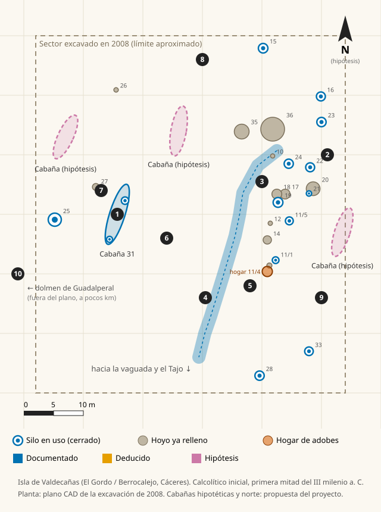

Tu navegador no puede mostrar la escena 3D. Aquí tienes toda la información en texto.
← Volver a la reconstrucción 3D
Cómo leer esta reconstrucción
Plano del poblado

Dónde y cuándo

Croquis sin escala exacta. No se indica el punto exacto del yacimiento para protegerlo.

Puntos de interés
Elige el nivel de lectura:
Glosario
Reconstrucción basada en la excavación de 2008 (dirección: D. A. Lara Montero; equipo: J. A. Valiente De Santis y J. R. Marcos Barbado). Las fuentes de cada ficha aparecen al final de la misma. Modelos y gráficos de creación propia. Relieve: contiene información derivada de © Instituto Geográfico Nacional (CC BY 4.0). Cuerpo humano base: MakeHuman (CC0).